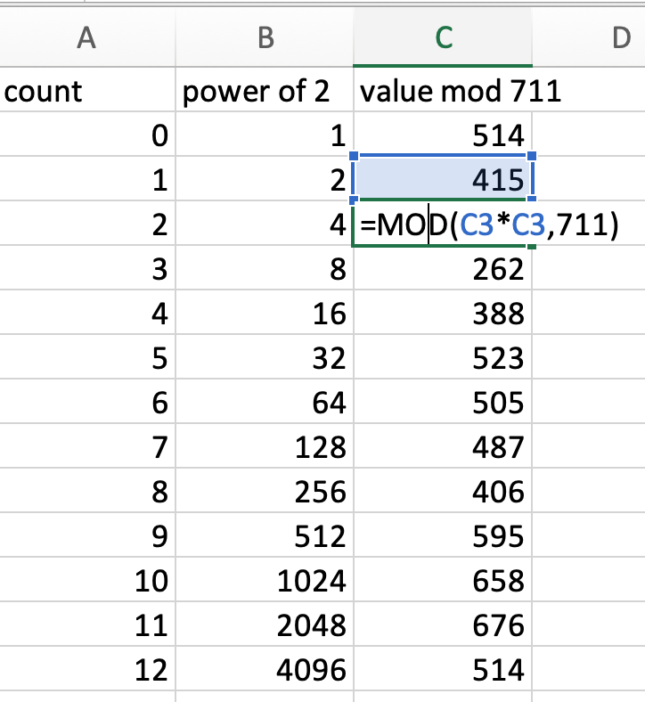

Section 3.5 Modular exponentiation
This section seems a bit out of nowhere, but it's a computational tool we need in order to perform the RSA encryption algorithm. When we exponentiate a number, we always get a bigger number, and we'll want to reduce modulo \(m\text{.}\) In this section we give an algorithm that allows us to perform this operation conveniently.
We begin first by showing how to do it "by hand" and then show how to do it using spreadsheet software.
Subsection
We begin by breaking up a number into sums of powers of two. First, a quick refresher table of the first several powers of two:
\(n\)
\(2^n\)
1
2
2
4
3
8
4
16
5
32
6
64
7
128
8
256
9
512
10
1024
11
2048
12
4096
Example 3.5.2.
Find the binary representation of each of the following numbers:
24
255
2019
\(24 = 16 + 8\) since that's \(2^4 + 2^3\)
- \begin{align*} 255 \amp= 128 + 64 + 32 + 16 + 8 + 4 + 2 + 1\\ \text{since that's}\\ \amp = 2^7 + 2^6 + 2^5 + 2^4 + 2^3 + 2^2 + 2^1 + 2^0 \end{align*}
-
This one is a little more work, so I'm including my thinking as we break it down:
\begin{align*} 2019 \amp= 1024 + 995\\ \amp= 1024 + 512 + 483 \\ \amp= 1024 + 512 + 256 + 227 \\ \amp= 1024 + 512 + 256 + 128 + 99 \\ \amp= 1024 + 512 + 256 + 128 + 64 + 35 \\ \amp= 1024 + 512 + 256 + 128 + 64 + 32 + 2 + 1 \end{align*}
Now recall the basic exponents properties of exponents: \((a^m)^n = a^{mn}\) and \(a^m \cdot a^n = a^{m+n}\text{.}\)
What's the connection? Let's take a look at repeatedly squaring a number, say \(n\text{:}\)
\(\displaystyle n^1 = n^1\)
\(\displaystyle (n^1)^2 = n^{ 1\cdot2 }\)
\(\displaystyle (n^2)^2 = n^{ 2\cdot2 } = n^4\)
\(\displaystyle (n^4)^2 = n^{ 4\cdot2 } = n^8\)
\(\displaystyle (n^8)^2 = n^{ 8\cdot2 } = n^{16}\)
\(\displaystyle (n^{16})^2 = n^{ 16\cdot2 } = n^{32}\)
\(\displaystyle (n^{32})^2 = n^{ 32\cdot2 } = n^{64}\)
\(\displaystyle (n^{64})^2 = n^{ 64\cdot2 } = n^{128}\)
etc...
Each time we square a number, the exponent becomes the next power of 2. And because each number can be expressed as a sum of powers of two, we can exploit this fact using a process we'll call modular exponentiation.
Definition 3.5.3. Modular Exponentiation.
Modular exponentiation is the process of repeatedly squaring and reducing a number modulo some integer, and then combining the results to find the required answer.
Example 3.5.4.
Here's a simple, typed example. We'll find \(37^{82} \pmod{52}\)
-
Find the binary representation of \(82\text{.}\)
\begin{equation*} 82 = 64 + 16 + 2 \end{equation*} -
Repeatedly square and reduce \(37 \pmod{52}\) six times. This works since \(2^6 = 64\text{,}\) which is the highest power of \(2\) in the binary representation of 82.
\(\displaystyle 37^1 = 37^1 = 37 \equiv 37\pmod{52}\)
\(\displaystyle 37^2 = 37^2 = 1369 \equiv 17\pmod{52}\)
\(\displaystyle 37^4 = 17^2 = 289 \equiv 29 \pmod{52}\)
\(\displaystyle 37^8 = 29^2 = 841 \equiv 9 \pmod{52}\)
\(\displaystyle 37^{16} = 9^2 = 81 \equiv 29 \pmod{52}\)
\(\displaystyle 37^{32} = 29^2 = 841 \equiv 9 \pmod{52}\)
\(\displaystyle 37^{64} = 9^2 = 81 \equiv 29 \pmod{52}\)
Note that it was a coincidence that we got into a loop of 29, 9, 29, ... But this will happen sometimes!
-
Now pick from the values above those entries which correspond to the binary representation of our desired power, 82. Since \(82 = 64 + 16 + 2\text{,}\) we pick the entries corresponding to \(37^{64}, 37^{16}, \and 37^2\text{:}\)
\begin{align*} 37^{82} \pmod{52} &= 37^{2 + 16 + 64} \pmod{52}\\ &= 37^2 \cdot 37^{16} \cdot 37^{64} \pmod{52}\\ &\equiv 17 \cdot 29 \cdot 29 \pmod{52}\\ &\equiv 49 \pmod{52} \end{align*}Take note of the equivalence symbols used above. We write \(=\) when the numbers represent equality and \(\equiv\) when we have reduced modulo 52.
Example 3.5.5.
Let's find \(514^{5367}\pmod{711}\) using the square-and-reduce method.
-
For the first step, we write the exponent as sums of powers of two:
\begin{gather*} 5367 = 4096 + 1024 + 128 + 64 + 32 + 16 + 4 + 2 + 1 \end{gather*} -
Second step, we repeatedly square and reduce, starting with 514 a total of 12 times since \(4096 = 2^{12}\text{.}\)
Before we get started, I want to admit that I did bring in a spreadsheet to help out. You're encouraged to as well! Excel, Google Sheets, and Apple Numbers all have a
=MOD(number, modulus)that compute \(\text{number} \modulus \text{modulus}\) I created a table in Excel like this:Table 3.5.6. Sample table in excel count power of 2 value mod 711 02=MOD(514, 711)12=MOD(C2*C2, 711)24=MOD(C3*C3, 711)then you click-drag to expand the formula down until your count is 12 and power of 2 is 4096. This tells us the following equivalences, with asterisks marking those values we need to finish the computation:
\(514^1 = 514 \pmod{711} \)*
\(514^2 \equiv 415 \pmod{711} \)*
\(514^4 \equiv 163 \pmod{711} \)*
\(\displaystyle 514^8 \equiv 262 \pmod{711} \)
\(514^{16} \equiv 388 \pmod{711} \)*
\(514^{32} \equiv 523 \pmod{711}\)*
\(514^{64} \equiv 505 \pmod{711}\)*
\(514^{128} \equiv 487 \pmod{711}\)*
\(\displaystyle 514^{256} \equiv 406 \pmod{711}\)
\(\displaystyle 514^{512} \equiv 595 \pmod{711}\)
\(514^{1024} \equiv 658 \pmod{711}\)*
\(\displaystyle 514^{2048} \equiv 676 \pmod{711}\)
\(514^{4096} \equiv 514 \pmod{711}\)*
-
Finally, we put it all together, bringing back the original expression and substituting what we found.
\begin{align*} 514^{5367} \amp= 514^{4096 + 1024 + 128 + 64 + 32 + 16 + 4 + 2 + 1}\\ \amp= 514^{4096}\cdot514^{1024}\cdot514^{128}\cdot514^{64}\\ \amp\hspace{1em} \cdot514^{32} \cdot514^{16} \cdot514^{4} \cdot514^2 \cdot514^1\\ \amp\equiv 514 \cdot 658 \cdot 487 \cdot 505 \cdot 523 \cdot 388 \cdot 163 \cdot 415 \cdot 514 \pmod{711} \\ \amp \text{multiple two at a time and reduce mod 711 each time}\\ \amp\equiv 694 \pmod{711} \end{align*}
Why only multiply a couple numbers at a time and reduce? If we multiplied all those numbers on second to last line, we'd get 586869563497917784218400, which is over half of the number of known stars in the universe 3 . Unless you have a really powerful calculator, you're going to get approximation errors and an incorrect answer!
Exercises Exercises
1.
Find the following:
\(\displaystyle 3^{2019} \pmod{99} \)
\(\displaystyle 7^{644} \pmod{645} \)
\(\displaystyle 123^{1001} \pmod{101} \)
Here are the numeric answers - but be sure you can do the process!
81
436
22
2.
Now practice as many examples as you need! Make up your own three numbers. Pick your base \(a\text{,}\) your exponent \(e\text{,}\) and your modulus \(m\text{.}\) Compute \(a^e \pmod{m}\) and check your work using the following Sage cell by changing the values a, e, and m in the code and clicking "Evaluate (Sage)".
Subsection Forum Posts about this section
wolframalpha.com